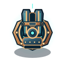
Рельсотрон950 кредитов · 100 / 2,8 c / 290
Prism Bastion · 16 полноразмерных моделей, 6 накладок и 6 законных комбинаций 5–2–0.
Визуальный каталог башни: каждая ступень меняет геометрию вооружения.

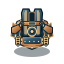
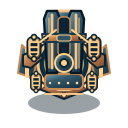
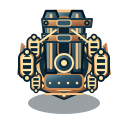
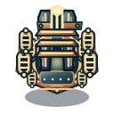
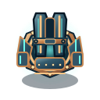
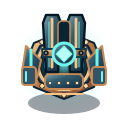
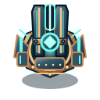
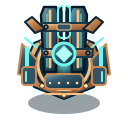
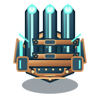
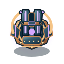
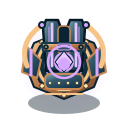
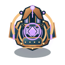
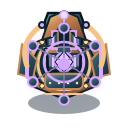
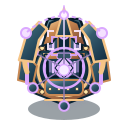
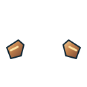
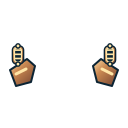
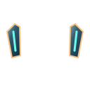
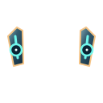
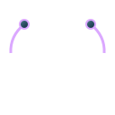
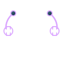
Комбинирование не изменяет collision footprint (26 пикселей). Накладка вторичной ветки рисуется поверх основного T5 SVG без замены силуэта.